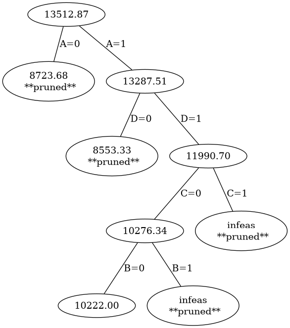

ProblemSet 4 -- Integer programs and max flow **solutions**
One man’s trash
You are at a yard sale, and have spied four crates of goods. You’ve estimated the value of each crate; these values are listed as actual value in the following table.
The owner has no idea what these items are worth, and is selling them for far less than they are worth; the prices being asked are listed as sales price in the following table).
Finally, the weight of each of the crates is listed in the table, as well.
crate actual value sales price weight in kg A $ 5000 $ 24 75.5 B $ 600 $ 76 2.7 C $ 3500 $ 43 3.3 D $ 6000 $ 754 6.7 You realize that you can purchase these crates and sell them at a much higher mark up. However, you walked to the yard sale and can only buy what you can carry on your person.
You have 800 dollars, and you and your friend together can carry an estimated 85 kg.
Fortunately, you have identified this as an integer programming problem!
Describe an integer linear program which models the situation (think carefully about what values the variables can take).
The integer program problem is:
consider a vector
x = [A, B, C, D]of variables, whereArepresents the purchase of the crateA,Brepresents the purchase of the crateB, etc.maximizevalue = actual_value - purchase_pricewhere
actual_value = [ 5000, 600, 3500, 6000 ] . [ A, B, C, D].T = 5000 A + 600 B + 3500 C + 6000 D purchase_price = [ 75.7, 27, 3.3, 6.7 ] . [ A, B, C, D].T = 75.7 A + 27 B + 3.3 C + 6.7 Dsubject to:
[ 24, 76, 43, 754 ] . x.T <= 800(i.e.24 A + 76 B + 43 C + 754 D <= 800),[ 75.5, 27, 3.3, 6.7] . x.T <= 85(i.e.75.5 A + 27 B + 3.3 C + 6.7 D <= 85), andA,B,C,Din[ 0,1 ]
Use the branch and bound algorithm to find the optimal solution, explaining your choices for which variables to branch on and where to prune the tree.
We first solve the relaxed linear program. Note that we specify
0 <= A,B,C,D <=using theboundsargument tolinprog.import numpy as np from scipy.optimize import linprog actual_value = np.array([ 5000, 600, 3500, 6000 ]) sales_price = np.array([ 24, 76, 43, 754 ]) weight = np.array([ 75.5, 27, 3.3, 6.7 ]) obj = actual_value - sales_price bounds = 4*[(0,1)] Aub = np.array([sales_price,weight]) bub = np.array([800,85]) res = linprog((-1)*obj, A_ub = Aub, b_ub = bub,bounds=bounds) pprint({ 'obj_value': res.fun, 'solution': res.x}) => {'obj_value': -13512.872801068243, 'solution': array([0.99583731, 0. , 1. , 0.97228104])}We are now going to branch; we’ll use the following code.
# use the python pretty-printer from pprint import pprint # make the jth standard basis vector of length 'size' def sbv(j,size): return np.array([1.0 if i == j else 0.0 for i in range(size)]) # record the data for the linear program as a dictionary, for ease of passage lp = { 'obj': obj, 'Aub': Aub, 'bub': bub, 'bounds': bounds } def branch(specs,lp): n = len(lp["obj"]) # each spec is a dictionary {"var": a, "value": b} # first, lookup the indices of the variable for each spec crates = ['A','B','C','D'] indices = [ crates.index(spec['var']) for spec in specs ] # now create equality constraints for the "specs" Aeq = np.array([sbv(index,4) for index in indices]) beq = np.array([spec["value"] for spec in specs]) result = linprog((-1)*lp["obj"], bounds = lp["bounds"], A_ub=lp["Aub"], b_ub=lp["bub"], A_eq = Aeq, b_eq = beq) if result.success: return {"obj_value": (-1)*result.fun, "solution": result.x} else: return "lin program failed"Since the values of
BandCare already integers in the relaxed solution, and since1-A < 1-D, we first branch onA.A=0: We solve the linear program specifyingA=0.res_A0 = branch([{'var': 'A', 'val': 0}],lp) pprint(res_A0) => {'obj_value': 8723.684210526317, 'solution': array([-0. , 0.03947368, 1. , 1. ])}A=1: We solve the linear program specifyingA=1.res_A1 = branch([{'var': 'A', 'val': 1}],lp) pprint(res_A1) => {'obj_value': 13287.50746268657, 'solution': array([1. , 0. , 1. , 0.92537313])}
Since the
obj_valueis larger forA=1, we branch below that value onD.A=1, D=0
res_A1_D0 = branch([{'var': 'A', 'val': 1}, {'var': 'D', 'val': 0}],lp) pprint(res_A1_D0) => {'obj_value': 8553.325925925925, 'solution': array([ 1. , 0.22962963, 1. , -0. ])}A=1, D=1res_A1_D1 = branch([{'var': 'A', 'val': 1}, {'var': 'D', 'val': 1}],lp) pprint(res_A1_D1) => {'obj_value': 11990.697674418605, 'solution': array([1. , 0. , 0.51162791, 1. ])}
The largest objective value so far is
A=1,D=1so we branch below that node, on the variableC.A=1, D=1, C=0res_A1_D1_C0 = branch([{'var': 'A', 'val': 1}, {'var': 'D', 'val': 1}, {'var': 'C', 'val': 0}],lp) pprint(res_A1_D1_C0) => {'obj_value': 10276.34074074074, 'solution': array([ 1. , 0.1037037, -0. , 1. ])}A=1, D=1, C=1res_A1_D1_C1 = branch([{'var': 'A', 'val': 1}, {'var': 'D', 'val': 1}, {'var': 'C', 'val': 1}],lp) pprint(res_A1_D1_C1) => 'lin program failed'
This linear program is infeasible, so we prune.
Now we branch on
BbelowA=1, D=1, C=0:A=1, D=1, C=0, B=0res_A1_D1_C0_B0 = branch([{'var': 'A', 'val': 1}, {'var': 'D', 'val': 1}, {'var': 'C', 'val': 0}, {'var': 'B', 'val': 0}],lp) pprint(res_A1_D1_C0_B0) => {'obj_value': 10222.0, 'solution': array([ 1., -0., -0., 1.])}A=1, D=1, C=0, B=1res_A1_D1_C0_B1 = branch([{'var': 'A', 'val': 1}, {'var': 'D', 'val': 1}, {'var': 'C', 'val': 0}, {'var': 'B', 'val': 1}],lp) pprint(res_A1_D1_C0_B1) => 'lin program failed'This linear program is infeasible, so we prune this node.
Now we pause to inspect our results so far. We have found an integral solution
A=1, D=1, C=0, B=0withobj_value = 10222.This objective value exceeds
8724which is theobj_valueatA=0. So we prune atA=0And this objective value exceeds
8553which is theobj_valueatA=1,D=0. So we prune atA=1,D=0.So we find that the optimal integral solution to the linear program is to buy the
A-crate and theD-crate, getting a real value of10,222from the purchase.Draw the branch and bound tree for your solution.
from graphviz import Graph nodes = { 0: f"{(-1)*res.fun:.2F}", 1: f"{res_A0['obj_value']:.2f}", 2: f"{res_A1['obj_value']:.2f}", 3: f"{res_A1_D0['obj_value']:.2f}", 4: f"{res_A1_D1['obj_value']:.2f}", 5: f"{res_A1_D1_C0['obj_value']:.2f}", 6: "infeas", 7: f"{res_A1_D1_C0_B0['obj_value']:.2f}", 8: "infeas" } pruned = [1,3,6,8] def describe(n): if n in pruned: return f"{nodes[n]}\n **pruned**" else: return f"{nodes[n]}" dot = Graph() dot.filename='PS4--tree' dot.format='png' for n in range(9): dot.node(f"{n}",describe(n)) dot.edge('0','1','A=0') dot.edge('0','2','A=1') dot.edge('2','3','D=0') dot.edge('2','4','D=1') dot.edge('4','5','C=0') dot.edge('4','6','C=1') dot.edge('5','7','B=0') dot.edge('5','8','B=1') dot.render()
(Hint: Note that you should use
linprogto solve the relaxed linear program, initially with your variables constrained between 0 and 1).Consider the following directed graph (see below for the code producing this graph).

Find the
minimum cutvalue for this weighted directed graph.(Recall that this means to consider all possible partitions of the nodes into an \(s\)-group and a \(t\)-group.
To identify such a partition, it is enough to indicate the \(s\)-group. For example, \(s\), \(a\) and \(c\) together form a possible \(s\)-group. The edge-cuts required to form this \(s\)-group involve the edges \(c \to d\) and \(a \to b\); thus the cut-value for this partition is \(14 + 12 = 26\).
Make a list all possible \(s\)-groups and indicate the corresponding cut-values. Remember that we are only interested in partitions that arise “from cuts” – thus, an \(s\)-group should be “connected”. And remember that cut value only involve capacities of edges \(u \to v\) where \(u\) is in the \(s\)-group and \(v\) is in the \(t\)-group (you would not also count the capacity of an edge \(v \to u\) if it exists).
We make a list whose elements are pairs
( s-groups, edge-cut values )for all possibles-groups:pp = [ ( ['s'], [13, 16] ), ( ['s', 'a'], [13, 10, 12] ), ( ['s', 'c'], [16, 4, 14] ), ( ['s', 'a', 'c'], [12, 14] ), ( ['s', 'a', 'b'], [13, 10, 7, 20] ), ( ['s', 'a', 'b', 'c'], [14, 6, 20] ), ( ['s', 'a', 'c', 'd'], [12, 7, 4] ), ( ['s', 'a', 'b', 'c', 'd'], [4,20]) ] # sum the cut-values, and sort by the results def min_cut(data): aa = [ (s, sum(cuts) ) for (s,cuts) in data] aa.sort(key=lambda x: x[1]) return aa pprint(min_cut_data) => [(['s', 'a', 'c', 'd'], 23), (['s', 'a', 'b', 'c', 'd'], 24), (['s', 'a', 'c'], 26), (['s'], 29), (['s', 'c'], 34), (['s', 'a'], 35), (['s', 'a', 'b', 'c'], 40), (['s', 'a', 'b'], 50)]The result shows that the
min-cutis achieved by considering thes-group['s','a','c','d']. For this, you must cut the edgea -> b,d->b, andd->t; these have value 12, 7, 4. This shows that themin-cutvalue is 23.By strong duality, you now know the
maximum flowvalue for the graph. Does strong duality tell you how to find a flow which achieves this value? Why or why not?Strong duality tells us that the
max-flowis 23. But It doesn’t tell us how to find the flowfthat achieves|f| = 23.Suppose that the capacity on the edge \(d \to t\) is increased from its current value of 4. By how much must this capacity change in order to change the
min cutconfiguration?Since the
min-cutis achieved with the group['s','a','c','d'], the edged -> tis involved in the edge cuts. So increasing the edge weight will change the configuration.To see what happens, we can create a function to modify the specified edge-weight:
def pp1(x): return [ ( ['s'], [13, 16] ), ( ['s', 'a'], [13, 10, 12] ), ( ['s', 'c'], [16, 4, 14] ), ( ['s', 'a', 'c'], [12, 14] ), ( ['s', 'a', 'b'], [13, 10, 7, 20] ), ( ['s', 'a', 'b', 'c'], [14, 6, 20] ), ( ['s', 'a', 'c', 'd'], [12, 7, 4+x] ), ( ['s', 'a', 'b', 'c', 'd'], [4+x, 20]) ] for c in range(1,5): print(f"{c} -> {min_cut(pp1(c))[0]}") => 1 -> (['s', 'a', 'c', 'd'], 24) 2 -> (['s', 'a', 'c', 'd'], 25) 3 -> (['s', 'a', 'c'], 26) 4 -> (['s', 'a', 'c'], 26)We see that raising the indicated edge weight by 1 or 2 (i.e. to a value of 5), the
min-cutis achieved with the sames-group, but once the edge weight is increased by 3 themin-cutis achieved by a different choice ofs-group.Would increasing the capacity for the edge \(b \to t\) from its current value of 20 affect the maximum flow value? Why or why not?
No, because the edge
b -> tis not involved in themin-cutconfiguration.Explain whether or not the following statement seems reasonable, and why: “The
min cutconfiguration (i.e. the edges involved in themin cut) reflects the maximal bottleneck in the system.”
Here is the code used to produce the graph; you can download it here.
from graphviz import Digraph dg = Digraph() #dg = Digraph(engine='neato') dg.attr(rankdir='LR') V = [ 's', 'a', 'b', 'c', 'd', 't' ] weights = { ('s','a'): 16, ('s','c'): 13, ('c','a'): 4, ('a','c'): 10, ('a','b'): 12, ('c','d'): 14, ('d','b'): 7, ('b','d'): 6, ('b','t'): 20, ('d','t'): 4 } c.node('t') with dg.subgraph() as c: c.attr(rank='same') for x in ['a','c']: c.node(x) with dg.subgraph() as c: c.attr(rank='same') for x in ['b','d']: c.node(x) c.node('s') for (f,t) in weights.keys(): wt = f"{weights[(f,t)]}" dg.edge(f,t,wt) dg.filename='PS4--graph' dg.format='png' dg.render()